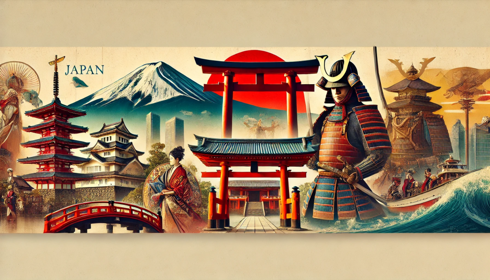
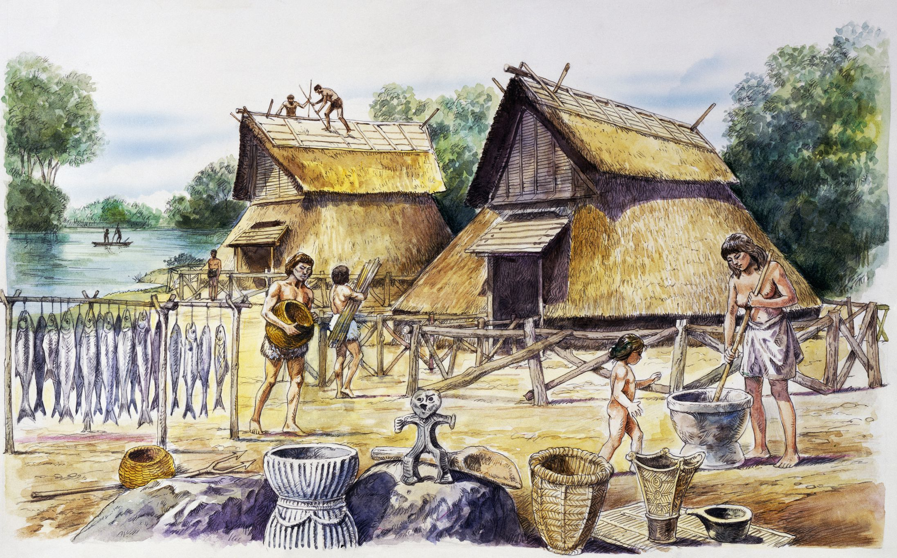
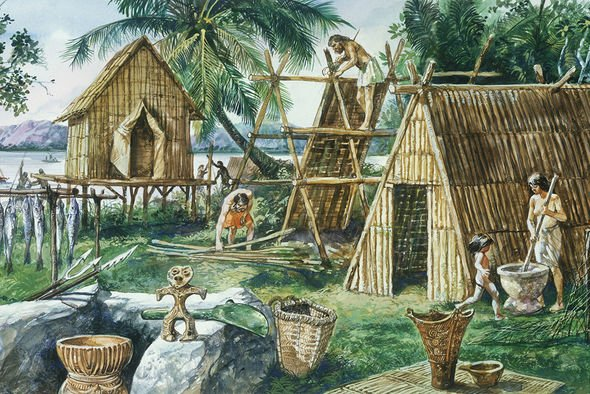
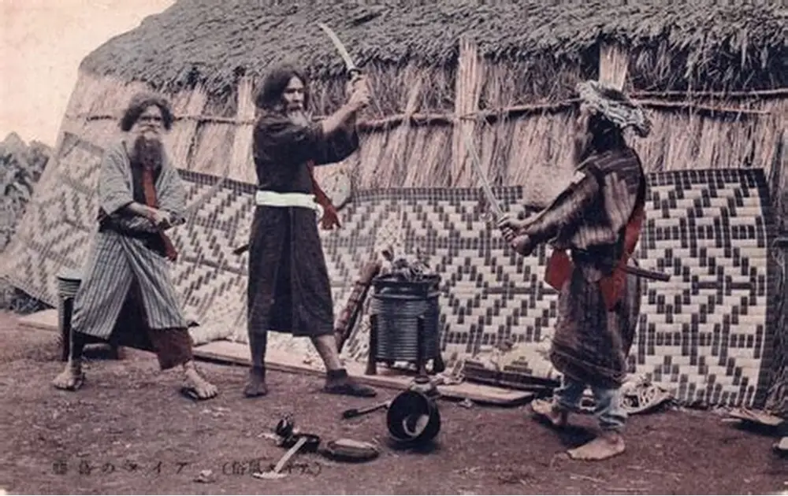
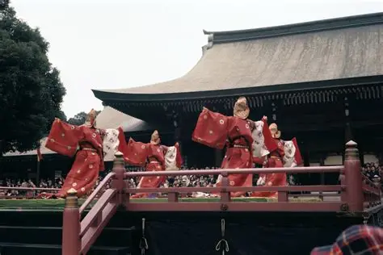
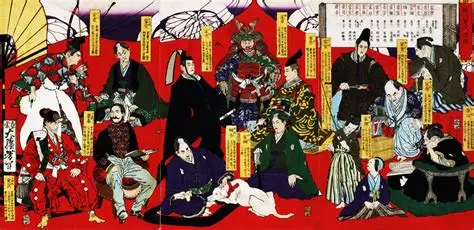
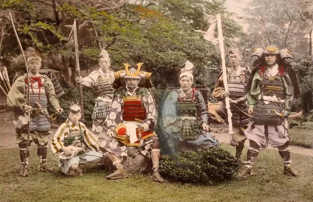
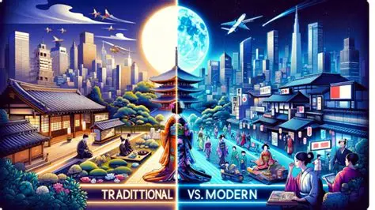
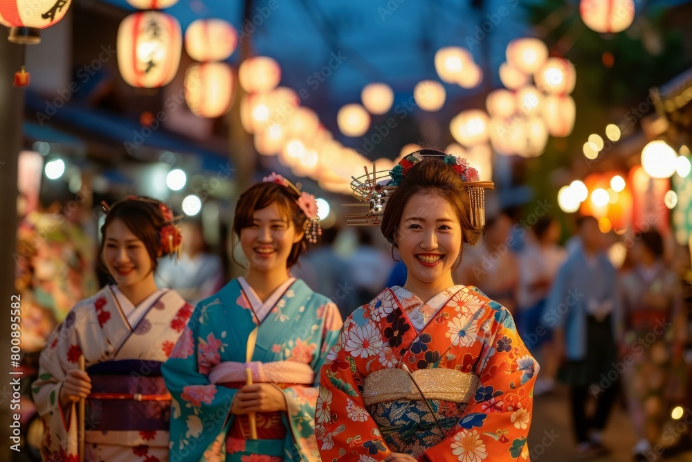

History of Japan
Japan’s history is a layered story of continuity, transformation, and resilience shaped by tradition, nature, and cultural identity.

Rather than following a linear path, Japanese history developed through gradual adaptation. External influences were absorbed selectively, reshaped, and integrated into existing traditions.
This balance between preservation and change became a defining feature of Japanese civilization and continues to influence modern society.
Ancient Foundations
The earliest periods of Japanese history, including the Jōmon and Yayoi eras, marked the transition from hunter-gatherer communities to settled agricultural societies. Rice cultivation, early spiritual beliefs, and social organization laid the foundations of Japanese culture.
A strong connection to nature and ancestral traditions emerged during this time, forming values that would persist throughout history.



Imperial Court and Cultural Development
During the Nara and Heian periods, the imperial court became the cultural and political center of Japan. Literature, poetry, and visual arts flourished, shaping aesthetic values still present today.
Ritual, refinement, and harmony defined elite culture and influenced broader social structures.

Feudal Japan and Samurai Rule
The rise of the samurai class and the establishment of the shogunate transformed Japan into a feudal society. Political power shifted from emperors to military leaders, emphasizing loyalty, discipline, and hierarchy.
Despite internal conflicts, this period encouraged philosophical thought, craftsmanship, and strong cultural traditions.

Isolation and Stability
During the Edo period, Japan experienced long-term stability under the Tokugawa shogunate. Isolation from foreign influence allowed internal culture to develop independently.
Theater, urban life, craftsmanship, and everyday customs flourished during this time of peace.
Modern Transformation
The Meiji Restoration marked a dramatic turning point, as Japan rapidly modernized its political, economic, and military systems while preserving cultural identity.
This transformation positioned Japan as a modern nation deeply rooted in its past.



Understanding Japan’s history provides essential context for its culture, cities, food, relationship with nature, and vision of the future. Each historical period contributes to a complex and evolving national identity.